暮らしと、ちょっといいもの。
実際のレビューをもとに、暮らしを少し良くするアイテムと知恵をお届けします。
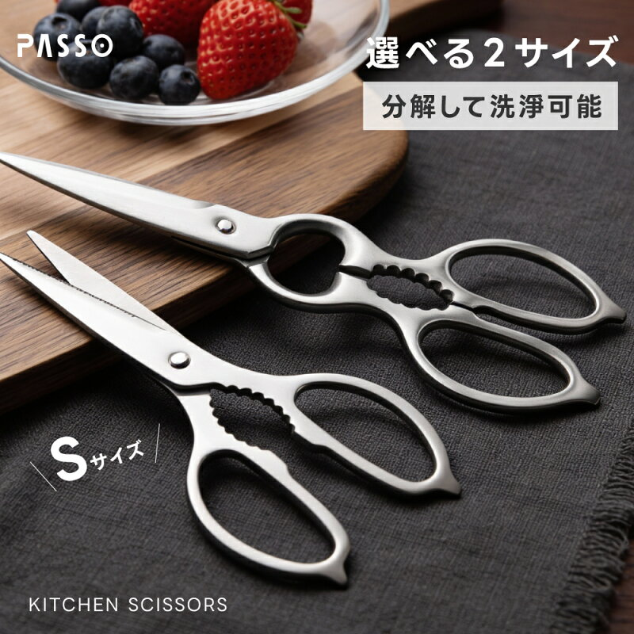
生活雑貨のおすすめアイテム比較 キッチン・米びつ・車用品
キッチンバサミ・お米保存袋・車用ゴミ箱など、毎日の暮らしを少し快適にする生活雑貨3点をレビュー評価とともに比較紹介します。
2026-10-20
-
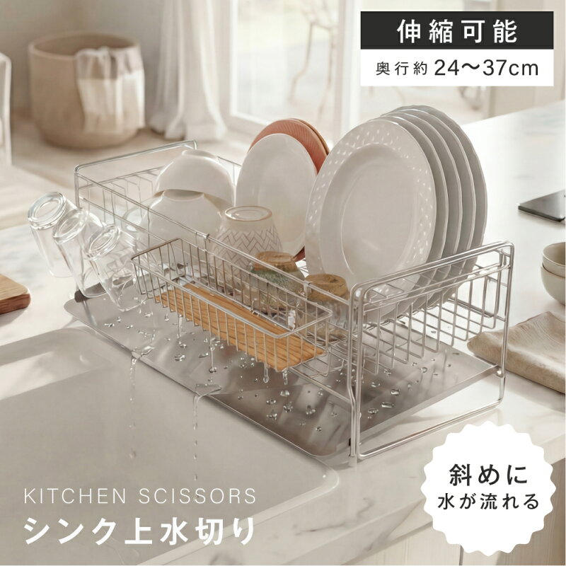
キッチン ・ PR水切りラックおすすめ比較｜ステンレス・折りたたみ型3選
キッチンの水切りに使える3タイプのアイテムを比較。大容量のステンレス水切りラック、省スペースなシンク周り収納、収納しやすい折りたたみ型まで、特徴をわかりやすく紹介します。
2026-10-19
-
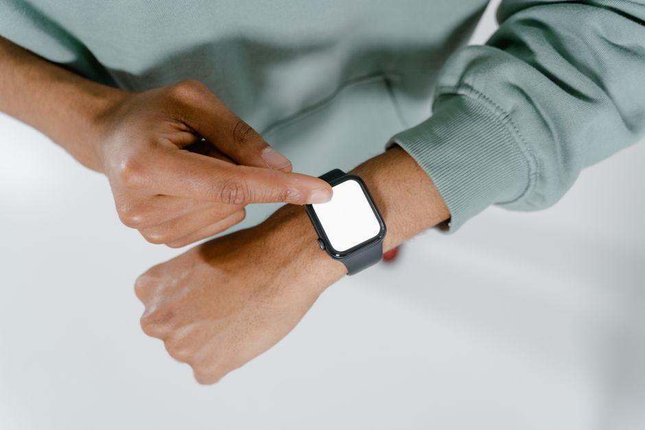
Huawei・中華ガジェット格安ワイヤレスイヤホンの品質を見分ける5つのチェックポイント
価格だけでは判断しにくい格安ワイヤレスイヤホンの品質について、Bluetoothバージョンや防水性能、技適マークなど購入前に確認したいポイントを整理して紹介します。
2026-10-19
-
Apple最新情報
Apple Watchの健康機能まとめ｜血圧通知と睡眠スコアの使い方
最新のApple Watchとwatchos26で使える健康機能を紹介します。高血圧の可能性お知らせ機能や睡眠時無呼吸の通知、睡眠スコア、心臓関連の機能、Workout Buddyの使い方を、断定を避けつつわかりやすく解説します。
2026-10-18
-
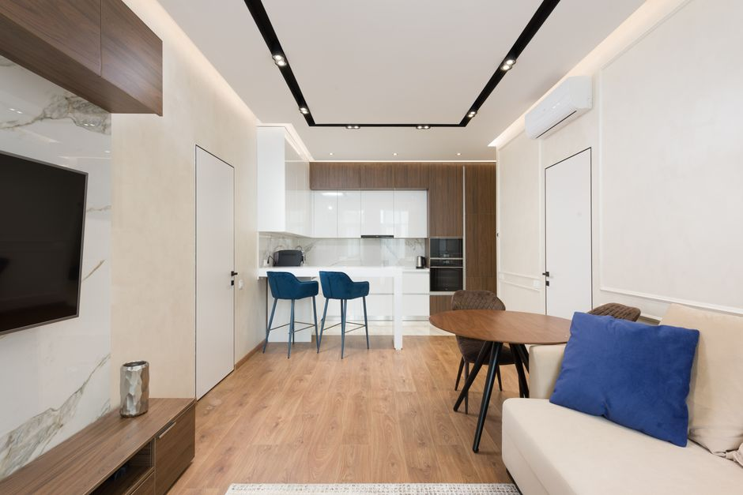
便利家電・最新家電工事不要の食洗機を選ぶ前に確認したい5つのポイント
工事不要タイプの食洗機は給水方式や設置スペース、賃貸の場合の確認事項など事前に調べておきたい点が複数あります。購入前にチェックしたいポイントを整理しました。
2026-10-18
-
メンズファッション
自宅でできる衣類のシミ・ニオイ対策|黄ばみと臭いの落とし方
襟や袖口の黄ばみ・汗染み、気になる皮脂臭やタバコ臭を自宅で和らげる方法を紹介。中性洗剤やセスキ炭酸ソーダ、重曹・クエン酸の使い分けなど、原因に合わせたケアのコツをまとめました。
2026-10-17
-
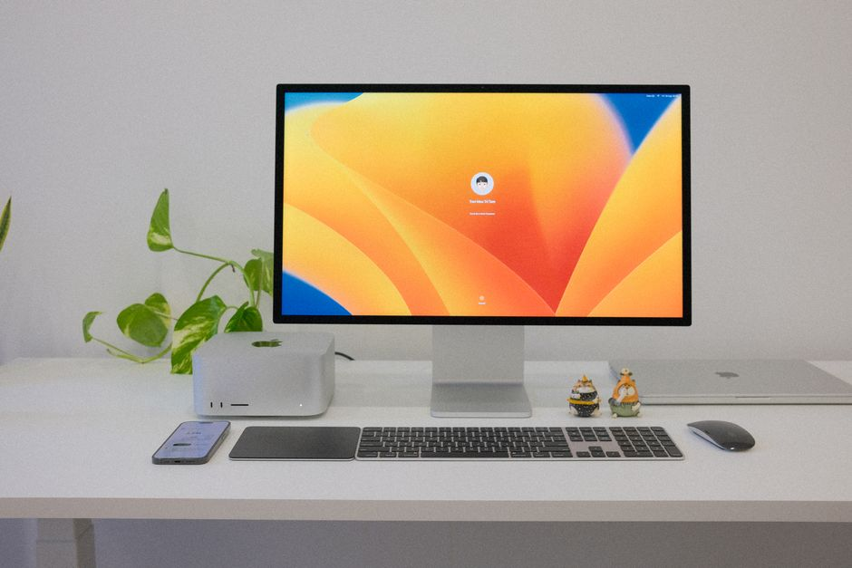
ガジェット外出先で役立つ充電・通信トラブルの備え方【2026年版】
2026年のモバイルバッテリー機内持ち込みルール変更や海外eSIMの接続トラブル対処法、国内の通信障害時の備えなど、外出先で役立つ充電・通信対策を事実に基づいて紹介します。
2026-10-17
-
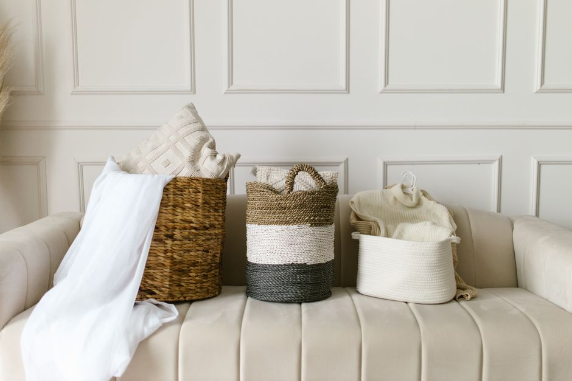
生活雑貨掃除機とフローリングワイパーの正しい順番と効率的な使い方
フローリング掃除は掃除機とワイパー、どちらを先に使うべきか迷う方へ。ワイパーと掃除機の正しい順番、ドライ・ウェットシートの使い分け、掃除機を効率よくかけるコツを根拠とともに紹介します。
2026-10-15
-
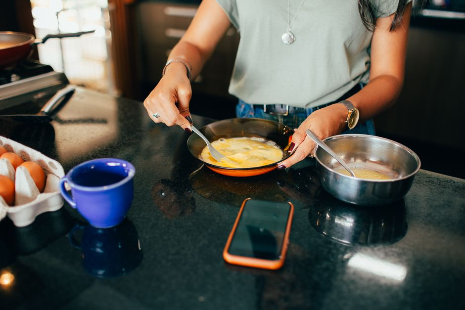
キッチン食器用スポンジと布巾を清潔に保つ正しい除菌・交換の習慣
キッチンスポンジや布巾は菌が増えやすいアイテムです。日々のもみ洗いや水切り保管、除菌方法、交換の目安など、清潔を保つための具体的な習慣を紹介します。
2026-10-15
-
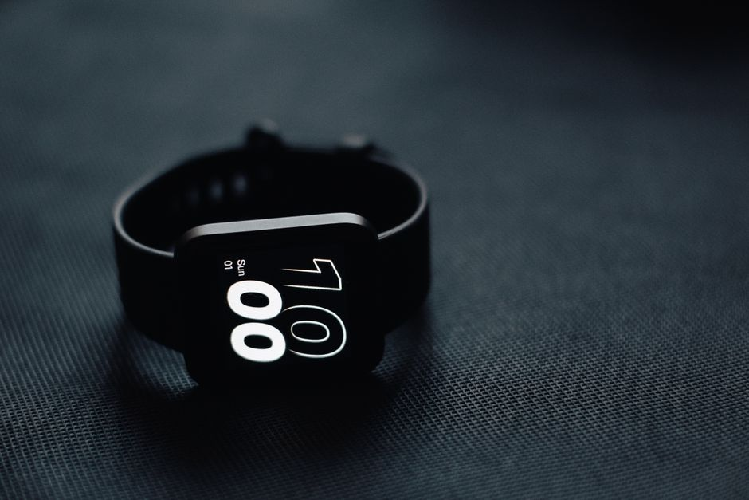
Huawei・中華ガジェットXiaomiとAnkerで比較するコスパ重視ガジェットブランドの選び方
モバイルバッテリーやイヤホンで人気のXiaomiとAnkerを例に、価格・保証・技術面での違いを整理し、コスパ重視でガジェットを選ぶ際の考え方を紹介します。
2026-10-14
-
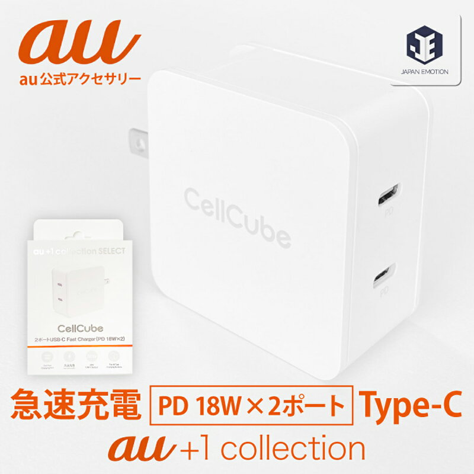
Apple最新情報 ・ PRApple周辺で揃えたい充電器とアクセサリー比較3選
Appleユーザーに向けて、2ポート急速充電器、バッグなどに付けられるチャーム、MagSafe対応リングの3点を実際の商品データをもとに比較紹介します。
2026-10-14
-
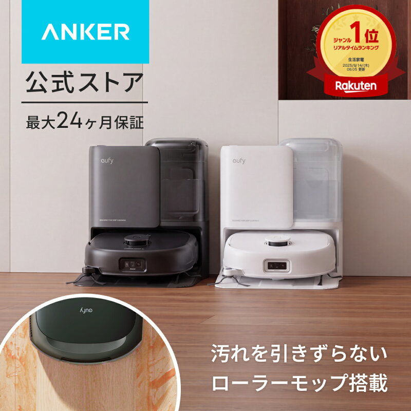
便利家電・最新家電 ・ PR便利家電・最新家電のおすすめアイテム比較2026
最新のロボット掃除機2機種と一人暮らし向け炊飯器を、口コミ評価や製品説明をもとに比較しながら紹介する便利家電ガイドです。
2026-10-13
-
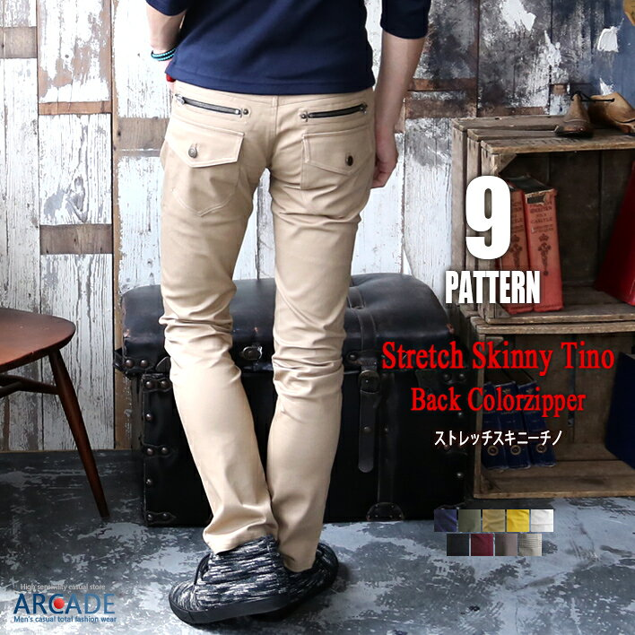
メンズファッション ・ PRチノパン&Tシャツ比較|シルエットと柄で選ぶメンズコーデ
スキニー・ブーツカットのチノパンと柄豊富な半袖Tシャツを比較。サイズ感やレビューの声を参考に、自分の体型やコーデに合うアイテムを選ぶヒントを紹介します。
2026-10-13
-
 ガジェット
ガジェット
スマホの画面・カメラレンズを傷つけない正しい扱い方
スマホの画面やカメラレンズに傷がつく原因と、保護フィルム・正しいお手入れ方法、持ち歩き方の注意点を分かりやすく紹介します。
2026-10-12
-
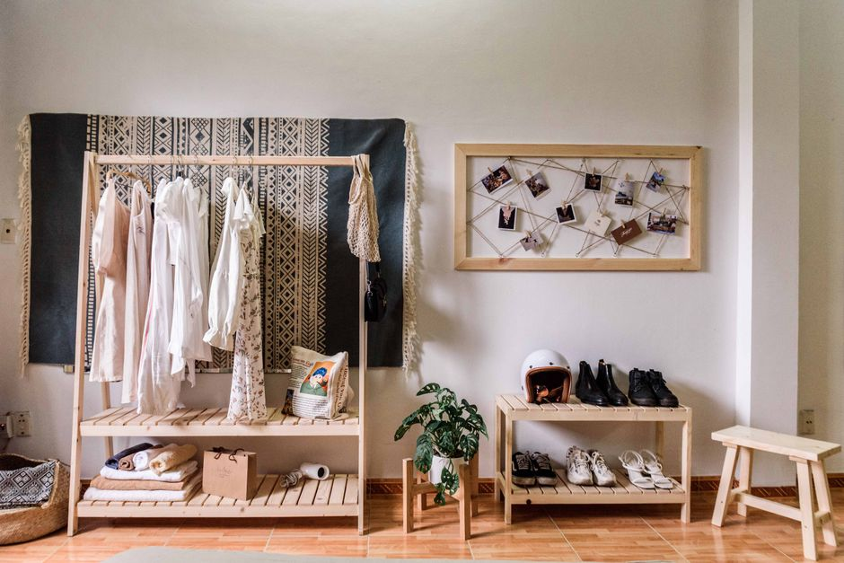
生活雑貨衣替えで収納力アップ｜デッドスペース活用と収納のコツ
衣替えのタイミングで収納スペースを増やすための工夫を紹介します。不要な服の見直しからデッドスペースの活用、圧縮袋やゾーニングの考え方まで、無理なく取り入れやすい方法をまとめました。
2026-10-12
-
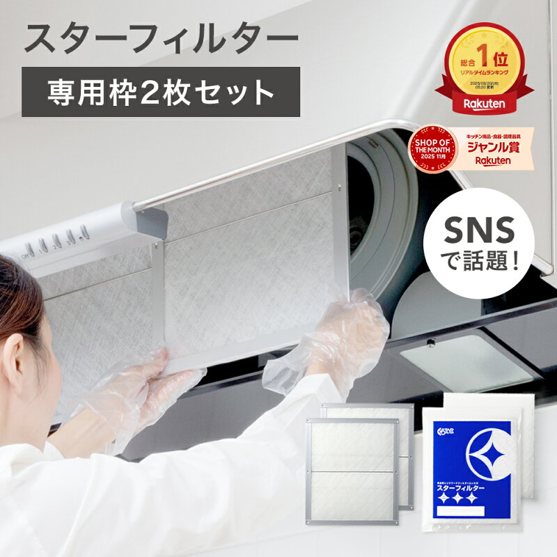
キッチン ・ PR換気扇フィルターや鍋・水切り器で選ぶキッチン用品比較
レンジフード用フィルター、ストウブの両手鍋、OXOのサラダスピナーという3つのキッチンアイテムを、価格やレビュー評価、特徴から比較してご紹介します。
2026-10-11
-
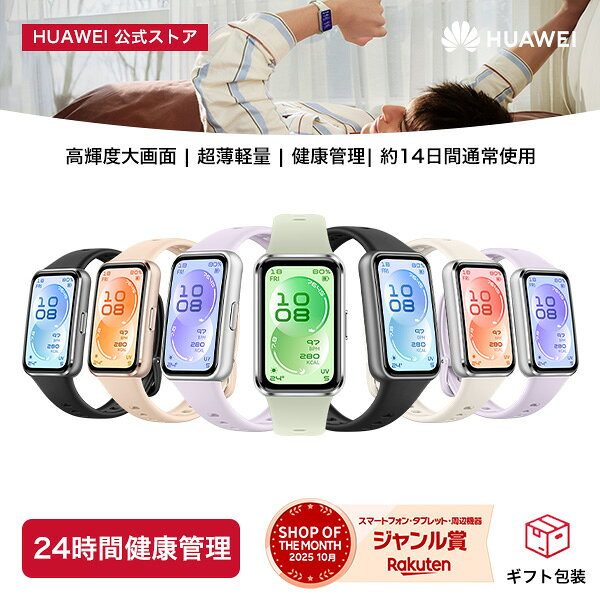
Huawei・中華ガジェット ・ PRHUAWEI Band比較とスマートウォッチ、価格帯で選ぶコツ
HUAWEI Bandの2モデルと通話機能付きスマートウォッチを価格・レビュー評価の実データで比較。予算や使い方に合わせた選び方の参考になる記事です。
2026-10-11
-
Apple最新情報
iPhoneバッテリー劣化の確認方法と寿命を延ばすコツ
iPhoneのバッテリー最大容量の確認方法や劣化の目安、充電サイクル数の見方、長持ちさせるための設定を、公式情報をもとにわかりやすく解説します。
2026-10-10
-
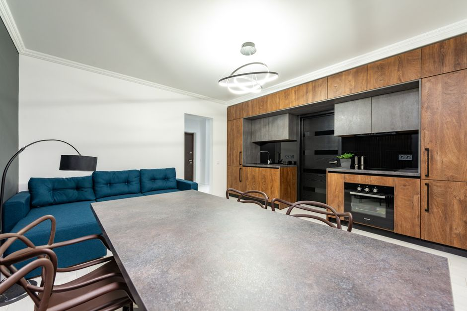
便利家電・最新家電ロボット掃除機が向いている部屋と向かない部屋の特徴
ロボット掃除機の導入を検討している方向けに、向いている部屋の条件と、段差・ラグ・コード類・階段などで注意が必要な部屋の特徴を整理して解説します。
2026-10-10
-
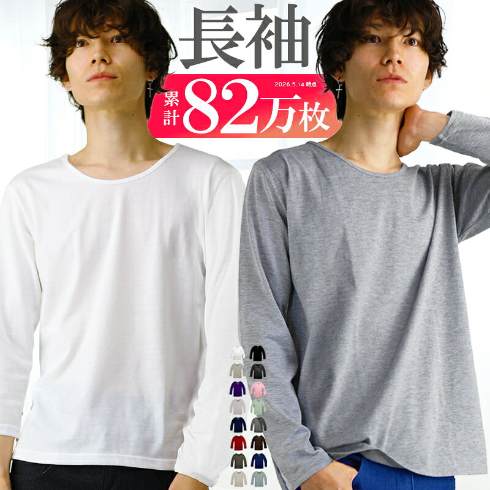
メンズファッション ・ PRメンズ長袖Tシャツ&ジャケット比較|レビューで選ぶ
メンズファッションの長袖Tシャツ・ロンT・テーラードジャケットを3点ピックアップし、レビュー評価や商品説明に基づいてそれぞれの特徴を比較紹介します。普段使いからオフィスまで使えるアイテム選びの参考にどうぞ。
2026-10-09
-
 ガジェット ・ PR
ガジェット ・ PR
スマホアクセサリー比較 ストラップ&冷却ファン3選
スマホの落下防止に役立つハンドストラップ2種と、発熱対策に使える冷却ファンを比較しながら紹介する記事です。素材やサイズ、レビュー評価をもとに特徴をまとめました。
2026-10-09
-
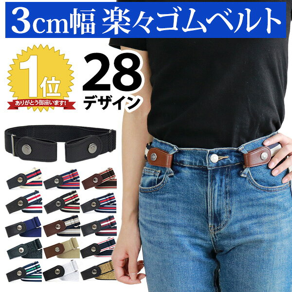
生活雑貨 ・ PR生活雑貨のおすすめアイテム比較 ベルト・耳かき・収納ラック
伸縮ベルトやLEDライト付き耳かき、浴室用のマグネット収納ラックなど、暮らしを少し便利にする生活雑貨3点を、価格やレビュー評価、使い方の特徴を交えて比較・紹介します。購入前の参考にどうぞ。
2026-10-08
-
キッチン
包丁の研ぎ方と保管のコツ｜切れ味を長持ちさせる方法
包丁の切れ味を保つための砥石を使った研ぎ方の基本と、サビを防ぐ日々の手入れ・保管方法を、具体的な手順とともにわかりやすく紹介します。
2026-10-08
-
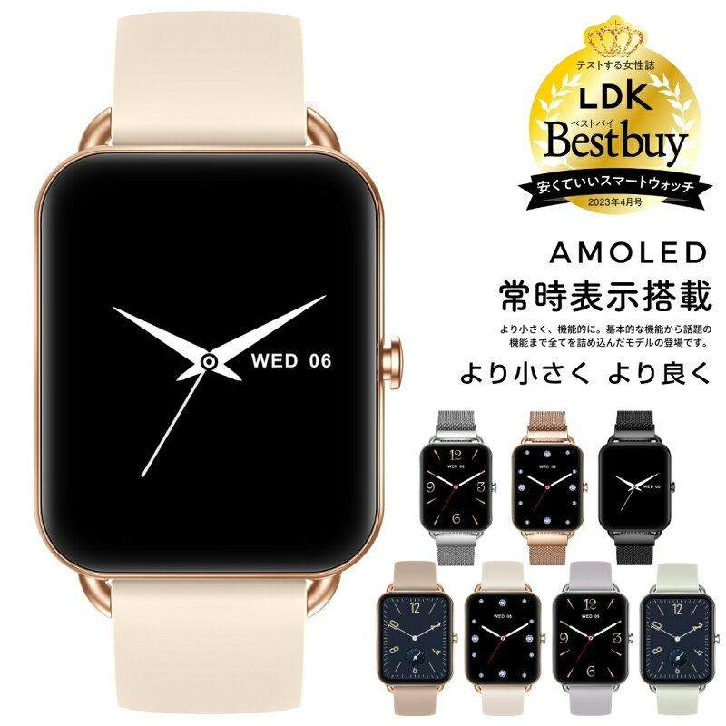
Huawei・中華ガジェット ・ PR中華ガジェットのスマートウォッチ3選、機能で比較
女性誌ベストバイ受賞モデル、知育にもなるキッズ向け、1.9インチ大画面モデルという3タイプのスマートウォッチを、搭載機能やレビュー評価の違いから比較しました。
2026-10-07
-
Apple最新情報
iOS26の便利機能まとめ｜着信スクリーニングやライブ翻訳の使い方
iOS26・iOS26.1で追加された着信スクリーニングやライブ翻訳、保留アシストなど実用的な新機能の使い方を、設定場所も含めてわかりやすく紹介します。
2026-10-07
-
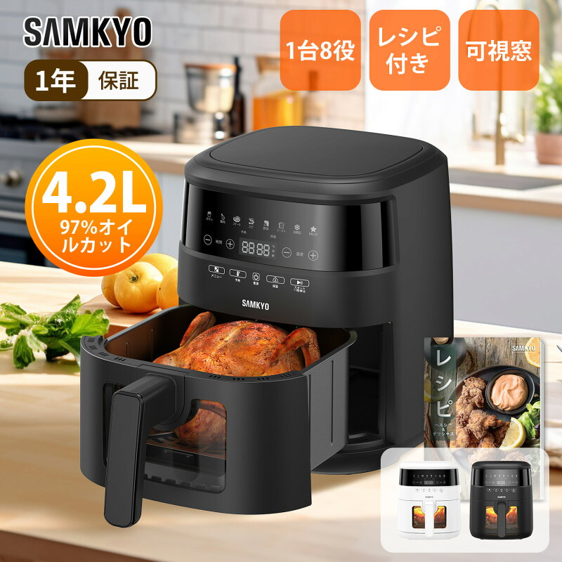
便利家電・最新家電 ・ PRノンフライヤーとフライパン徹底比較 便利家電の選び方
SAMKYO ノンフライヤーの2モデルとオールパンゼロのフライパンを、レビュー件数や評価を基準に比較。便利家電・最新家電を選ぶ際の参考情報としてまとめました。
2026-10-06
-
メンズファッション
靴下・インナーの清潔感を保つ洗濯と素材選びのコツ
靴下やインナーなど見えない部分の清潔感を保つための、素材選びや洗濯習慣、重曹・制汗剤といった手軽な対策を、調査した情報をもとに紹介します。においや黄ばみが気になる人はチェックしてみてください。
2026-10-06
-
 ガジェット ・ PR
ガジェット ・ PR
スマホを着替えさせる人気アクセサリー3選 比較ガイド
スマホショルダーストラップ、iFaceのMagSafe対応ケース、スワロフスキーのイヤホンジャックカバーを、価格とレビュー評価をもとに比較しながらご紹介します。
2026-10-05
-
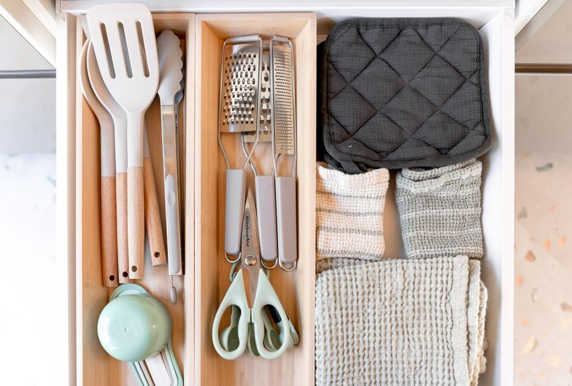
生活雑貨デスクの書類が片付く仕分けルール｜分類と保管のコツ
デスク周りに溜まりがちな書類を整理するための分類方法や仕分けルール、ラベリングのコツを紹介します。使用頻度に応じた保管場所の分け方も解説します。
2026-10-05
-
キッチン
自炊初心者が最初に揃えるべき調理器具と選び方
自炊を始めたばかりの方向けに、包丁やまな板、フライパン、鍋など最初に揃えたい調理器具の種類とサイズの目安、100均で済ませてよいものの見分け方を紹介します。
2026-10-04